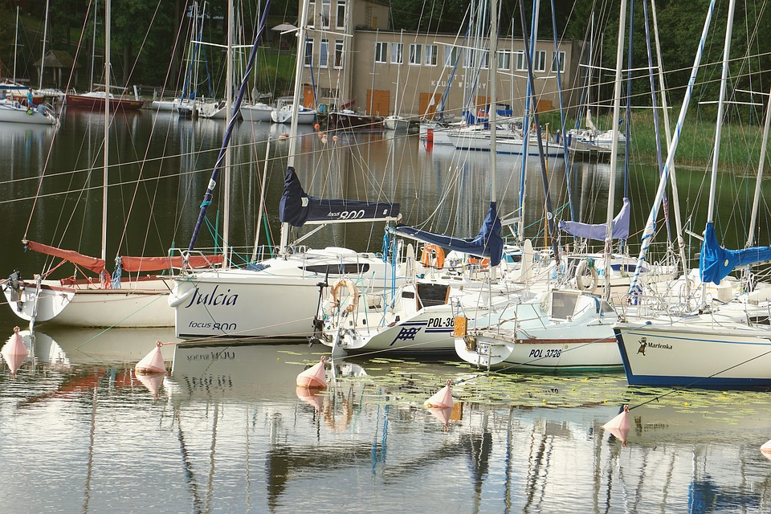

Renovating an Older Sailboat: A Cost-Effective Way to Enjoy Sailing
Sailing is a popular activity that has been enjoyed for centuries, and for good reason. There's something about the feeling of the wind in your hair and the sound of the water rushing past the hull that can't be beat. While some may think that sailing is an expensive hobby, it doesn't have to be. In fact, with a little bit of DIY work, you can turn an older sailboat into a seaworthy vessel at a fraction of the cost of buying a new one.
Assessing the Condition of the Boat
When it comes to sailboats, older models are often overlooked in favor of newer, shinier vessels. However, older boats have a charm and character that can't be replicated in modern boats. Plus, with a little bit of love and attention, they can be just as seaworthy as newer models.
The first step of fixing up an older sailboat is to assess its condition. This means checking the hull for any cracks or damage, inspecting the rigging, and making sure the sails are in good shape. Depending on the age of the boat, you may need to replace some of the rigging or sails, but this can often be done relatively inexpensively.
Make sure to also check and/or renew service items like zinc anodes, thru-hulls, water filters, batteries as well as engine oil and filters.
Making Repairs and Upgrades
Once you have assessed the condition of the boat, it's time to start making any necessary repairs. This could involve patching any cracks in the hull, replacing any worn-out rigging, or even repainting the boat to give it a fresh new look. Depending on the level of DIY expertise you have, you may want to do some of these repairs yourself or hire a professional to do them for you.
In addition to repairs, there are also a number of upgrades you can make to an older sailboat to make it more comfortable and functional. For example, you may want to install a new navigation system, add a solar panel to generate electricity, or even install a small stove to make cooking on board easier. These upgrades don't have to be expensive, and they can make a big difference in the overall enjoyment of your sailing experience.
Customizing the Boat
Customizing your sailboat can be an exciting part of renovating an older boat. Not only can you add features that will make your sailing experience more enjoyable, but you can also add elements that reflect your personality and style.
Add Comfort and Functionality
One of the first things you might want to consider when customizing your sailboat is adding features that will make your sailing experience more comfortable and functional. For example, you could add a bimini top to provide shade and shelter from the sun, or install a new toilet to make onboard living more comfortable.
Adding a new navigation system can also be a useful upgrade, allowing you to navigate more easily and safely. There are many options available, including GPS systems and chartplotters, which can help you plan your route and avoid hazards.
Upgrade the Interior
Another aspect of customizing your sailboat is upgrading the interior. Depending on the size of your boat, you may have limited space to work with, but there are still many things you can do to improve the comfort and functionality of your living quarters. For example, you could replace the cushions with new, more comfortable ones, or install a new galley to make cooking onboard easier.
Adding storage space can also be a helpful upgrade, allowing you to keep your gear organized and within easy reach. This could involve adding shelves, cabinets, or even installing custom storage solutions.
Make it Your Own
One of the best things about renovating an older sailboat is that you have the opportunity to make it truly your own. Whether you want to add a custom paint job, install new lighting fixtures, or create a unique seating area on deck, there are endless possibilities for customization.
If you're thinking about taking your boating experience to the next level, I highly recommend considering solar and/or wind power. Not only are these forms of renewable energy environmentally friendly, but they can also save you a lot of money in the long run. With solar power, you can harness the energy of the sun to power your boat's batteries and electrical systems, while wind power uses the natural power of the wind to generate electricity. Both of these options are silent and produce no emissions, making them ideal for peaceful and eco-friendly boating. Plus, you'll have the satisfaction of knowing that you're doing your part to reduce your carbon footprint and protect the environment.
When it comes to making your sailboat your own, don't be afraid to get creative. Consider adding personal touches such as artwork, photographs, or other decorative elements that reflect your style and personality.
The Rewards of Renovating an Older Sailboat
Of course, renovating an older sailboat does require some time and effort, but the rewards can be well worth it. Not only will you save money compared to buying a new boat, but you'll also have the satisfaction of knowing that you put in the work to make your boat seaworthy. Plus, sailing on a boat that you have fixed up yourself means you know it inside and out, and will be able to fix problems that may appear when you're far from shore.
Resources and Safety Considerations
When it comes to DIY projects on sailboats, there are a variety of resources available to help you along the way. Online forums and groups dedicated to sailboat restoration and renovation are a great source of information and support. You can find tips and advice on everything from repairing hull damage to installing a new navigation system.
In addition to online resources, there are also a number of books and guides available that can help you with your DIY sailboat project. These resources can provide step-by-step instructions and helpful illustrations to guide you through the process.
Another important consideration when taking on a DIY sailboat project is safety. Sailing can be a dangerous activity, and it's important to take all necessary precautions to ensure your safety and the safety of others. This means wearing appropriate safety gear, such as life jackets and harnesses, and taking a boating safety course if you're new to sailing.
It's also important to be aware of the weather conditions and potential hazards in the area where you'll be sailing. Make sure to check weather reports and navigational charts before setting out on your sailboat, and be prepared to adjust your plans if conditions change unexpectedly.
Finally, it's important to have realistic expectations when it comes to renovating an older sailboat. While you can certainly make significant improvements to an older boat, it's unlikely that you'll be able to turn it into a modern, high-performance vessel. However, with some effort and creativity, you can transform an older boat into a comfortable and reliable sailboat that will provide years of enjoyment.
Conclusion
If you're looking for a fun and rewarding DIY project, consider taking on a sailboat restoration or renovation. With a little bit of time and effort, you can turn an older sailboat into a seaworthy vessel that you can be proud of. By assessing the boat's condition, making necessary repairs and upgrades, and customizing it to your needs, you'll have a unique sailboat that you know inside and out.
However, it's important to keep safety in mind when working on a sailboat, and to be aware of the potential hazards of sailing. By taking all necessary precautions and being prepared for unexpected conditions, you can enjoy the thrill of sailing while minimizing risks.
So if you're ready to set sail on a new adventure, consider fixing up an older sailboat and taking to the open seas.